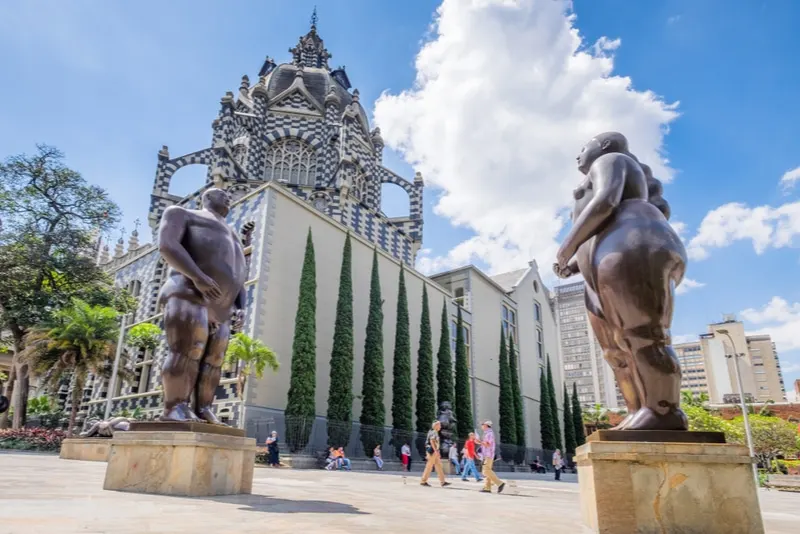
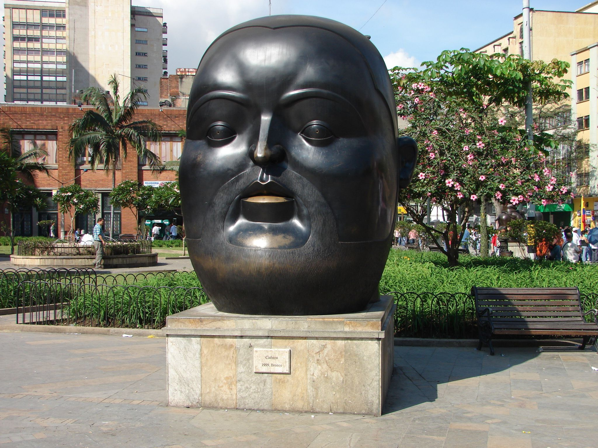

El Parque Arví es una reserva natural ubicada en las montañas cercanas a Medellín, en el municipio de Santa Elena. Es uno de los destinos ecoturísticos más populares de la región y ofrece una amplia variedad de actividades al aire libre y experiencias en contacto con la naturaleza.
Sitio oficialPlaza Botero




La Plaza Botero es un icónico espacio público ubicado en el centro de la ciudad de Medellín, Colombia. Es famosa por albergar una impresionante colección de esculturas monumentales creadas por el renombrado artista colombiano Fernando Botero. La plaza cuenta con 23 esculturas de gran tamaño, todas creadas en el estilo característico de Botero, que se distingue por sus formas voluptuosas y exageradas. Las esculturas representan una variedad de temas y personajes, desde figuras humanas hasta animales, cada una con su propio encanto y expresividad.
Sitio oficial